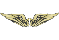
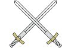
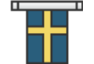
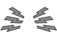
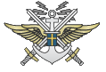

Swedish Forces Pack was created by Engen, Ugga and granQ almost 10 years ago. Except Ugga that did some maps for Half-life the team had no idea about how to make models, textures or code. Little by little the team started to try with the goal to get one group of swedish soldiers including the basic weapons.
As year passed the team became bigger, got a small fan base and also improved the skills. With the third release of SFP the quality was almost the same as with Operation Flashpoint stuff. The following year the team was invited to the Swedish Army Combat School for taking reference photos and the team grew to around 15 people while the core for most part was 4, with the 3 orignal members and Kungtotte.
With the forth release for Operation Flashpoint, SFP4. A majority of all weapons used during the last 100 years, plus over 20 vehicles was made and one Swedish island was created with very high detail.
Most of the team then quit and a community homepage was created, Anrop.se for the Swedish community thats been around SFP for so many years. With the release of ArmA 1 there were some small imports from the OFP material and later new people joined. The Armed Assault of SFP had some new vehicles yet it didn’t become as popular as OFP.
Now the SFP team has a new core, subroc making textures and Steel Rat high quality models. Left with coding is granQ and some of the old SFP members are still around and help out. The aim for SFP is now to limit some aspects like choosing two scenarios, 2015 and 1981 and increase the quality while keeping some of the quantitative that made SFP famous in the first place.
The Swedish Forces Pack logo is meant to represent all the branches of the Swedish Armed Forces, (Airforce, Army and the Navy). On top there is of course the Swedish flag.
The "lightning" is a common symbol for communication in the armed forces but its here represeting the close connection the community site Anrop.se which in Swedish means “call” as in when you call another unit. This due to the close relationship between SFP and Anrop.
    